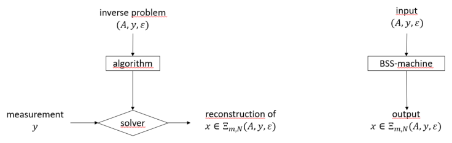

Chương 8 — Khả năng giải của tính toán thực
Chương 8
Tính Khả giải Thực của Tính toán Thực
Có những bài toán về nguyên lý không thể giải được bằng tính khả tính số, nhưng lại có thể giải được dưới giả định về tính khả tính thực. Kết quả này không chỉ mang ý nghĩa lý thuyết. Trong chương này, các bài toán nghịch đảo của chẩn đoán hình ảnh y khoa được phân tích như một ví dụ. Chương trước đã chỉ ra rằng về nguyên lý không thể có lời giải chính xác bằng tính khả tính số. Tuy nhiên, dưới giả định về tính khả tính thực, bài toán này về nguyên lý có thể giải được. Do đó, tính khả tính và tính khả quyết một lần nữa phụ thuộc vào chủ nghĩa hình thức toán học được giả định. Một lần nữa, làm thế nào các giả định lý thuyết–toán học này có thể được hiện thực hóa về mặt kỹ thuật và vật lý lại là một câu hỏi thực nghiệm.
Máy tính số tạo ra các mô hình rời rạc của thế giới vốn bị giới hạn bởi các giới hạn logic–toán học của tính khả tính số. Nhiều bài toán trong thế giới thực có bản chất liên tục và chỉ có thể được xấp xỉ bởi các cỗ máy số. Nhưng điểm mấu chốt liên quan đến những bài toán mà về nguyên lý không thể tính toán hoặc quyết định theo cách số, nhưng lại có thể theo cách liên tục. Nhận thức sâu sắc mang tính nền tảng này về mặt lý thuyết đã được phát hiện và chứng minh ngay từ nửa đầu thế kỷ 20. Năm 1931, Gödel đã chứng minh rằng có những bài toán có thể định nghĩa trên số học, tức là các số rời rạc, là bất khả quyết. Kết quả này vừa mở ra vừa giới hạn thế giới số. Hai mươi năm sau, vào năm 1951, Tarski đã chứng minh rằng mọi bài toán có thể định nghĩa trên các số thực (tức là tập liên tục) cũng đều khả quyết trên chúng (xem Chương 5). Về mặt thực tiễn, kết quả của Tarski đã mở ra tiềm năng cho thế giới tính toán tương tự (analog).
141
142 Trí tuệ Nhân tạo của Các Hệ thống Phỏng thần kinh
Tính toán Số so với Tính toán Thực (“Tương tự”)
Đối với tính toán số, máy Turing vạn năng là khái niệm logic–toán học của một máy tính lập trình số (“von Neumann”). Đối với tính toán tương tự (“thực”), máy BSS vạn năng là khái niệm logic–toán học của một máy tính tương tự (“thực”) và các hệ thống phỏng thần kinh. Về mặt lý thuyết, một máy BSS có thể lưu trữ và tính toán bất kỳ số thực nào. Nó là một cỗ máy đại số theo nghĩa nó có thể tính toán các phép toán trường cộng và nhân trên trường R của các số thực và có thể áp dụng các quan hệ thứ tự <, >, và = cho các số thực (xem Chương 4).
Các máy Turing có bộ tiên tri (oracle) cũng có thể xử lý số thực. Trong trường hợp này, đối với mỗi số thực, một dãy Cauchy (an)n∈N được cung cấp bởi một bộ tiên tri kiểm soát sai số xấp xỉ |x − an| < 2−n với mọi n ∈ N. Dãy Cauchy này biểu diễn số thực và là đầu vào của máy Turing. Các phép toán của máy Turing được áp dụng lên dãy số hữu tỉ này.
Khác với các máy tiên tri này, một máy BSS sử dụng một chương trình được biểu diễn bởi một đồ thị có hướng hữu hạn với năm loại nút cho các phép toán khác nhau như nút đầu vào, nút tính toán, nút rẽ nhánh, nút dịch chuyển và nút đầu ra. Giống như máy Turing, máy BSS dừng sau hữu hạn bước và hoàn thành chương trình của mình.
Các hàm khả tính BSS là các ánh xạ đầu vào–đầu ra Φ của một máy BSS B. Đầu ra ΦB(x) được xác định nếu B dừng với đầu vào x và đầu ra được tạo ra bởi chương trình của B. Một tập con A của các số thực là khả quyết BSS nếu tồn tại một máy BSS BA với BA(x) = χA(x) cho hàm đặc trưng χA của tập A vốn khả tính BSS. Một tập con của các số thực là bán khả quyết BSS nếu tồn tại một máy BSS BA với BA(x) = 1 với mọi x ∈ A.
Như đã trình bày trong Chương 4, tính khả tính BSS có thể được định nghĩa bằng các tập bán đại số được mô tả bởi hữu hạn các phương trình và bất phương trình đa thức. Về mặt lịch sử, ý tưởng về các bài toán giá trị thực khả tính đã được quy giản về các đa thức vốn được giả định là các hàm khả tính sơ cấp. Mọi tập bán khả quyết BSS của các số thực có thể được biểu diễn dưới dạng hợp đếm được
Tính Khả giải Thực của Tính toán Thực 143
của các tập bán đại số. Về mặt hình thức, bất kỳ tập bán đại số nào trong Rn đều là hợp hữu hạn của các tập {x ∈ Rn | p(x) = 0 ∧ q∈Q > 0} với một tập hữu hạn các đa thức giá trị thực p, q : Rn → R.
Có thể chứng minh rằng bất kỳ phép chiếu Rn → Rm với n ≥ m nào cũng ánh xạ các tập bán đại số trong Rn thành các tập bán đại số trong Rm. Do đó, một công thức bao gồm các đa thức với các liên từ logic ∧ (“và”), ∨ (“hoặc”), ¬ (“phủ định”), lượng từ phổ biến ∀, và lượng từ tồn tại ∃ có thể được biến đổi bằng thuật toán thành một công thức tương đương không chứa lượng từ. A. Tarski đã xét các công thức trong ngôn ngữ bậc nhất trên {R, +, −, 0, 1, >} không có biến tự do (Tarski, 1951; Seidenberg, 1954). Tồn tại một thuật toán để quyết định tính đúng sai của các công thức này. Thuật toán bắt nguồn từ việc biến đổi các tập bán đại số có lượng từ thành các tập bán đại số không có lượng từ.
Thuật toán của Tarski có thể được tính toán bởi máy BSS, nhưng không thể bởi máy Turing số. Quan hệ đầu vào và đầu ra của thuật toán tối ưu hóa có thể được mô tả cho các đa thức thực. Sau đây, thuật toán này được gọi là thuật toán Tarski để nhấn mạnh cơ sở của nó dựa trên các kết quả nền tảng của Tarski.
Thuật toán Tarski (Basu và cộng sự, 2006)
Cho một tập hữu hạn các đa thức thực p : Rn → R mô tả một tập bán đại số S bằng một công thức không chứa lượng từ và một đa thức f : Rn → R.
Khi đó, cận dưới đúng w của f trên S và một điểm cực tiểu được đảm bảo, về mặt hình thức là một điểm x∗ ∈ S với f(x∗) = w nếu một điểm như vậy tồn tại.
Máy BSS Giải Quyết Các Bài toán Tối ưu hóa
Bây giờ, cần tìm các máy BSS thực để giải các bài toán tối ưu hóa không thể giải được bởi máy Turing số. Một ví dụ là một bài toán nghịch đảo trong khoa học hình ảnh:
Cho các phép đo nhiễu y = Ax + e ∈ Cm của một đối tượng x với ma trận A ∈ Cm×N (m < N) của các phương pháp đo (ví dụ: biến đổi Fourier), vectơ nhiễu e ∈ Cm, vectơ ảnh đo được
144 Trí tuệ Nhân tạo của Các Hệ thống Phỏng thần kinh y ∈ Cm, và x ∈ CN là đối tượng cần tái tạo (thường được cho dưới dạng ảnh rời rạc đã vectơ hóa). Để tái tạo dữ liệu từ các phép đo cho trước, một bài toán tối ưu hóa phải được giải. Trong trường hợp bài toán ngược, một bài toán cực tiểu hóa yêu cầu với ma trận ∈ Cm×N và vectơ y ∈ Cm cho trước hãy xác định argx ∈ CN min ∥x∥l1 với ∥Ax − y∥ℓ2 ≤ ε, trong đó ε > 0 kiểm soát độ nới lỏng (Candès và cộng sự, 2006; Chen và cộng sự, 1998).
Một lời giải thuật toán chỉ có thể tồn tại nếu ánh xạ tái tạo từ các phép đo đến dữ liệu tương ứng là khả tính. Có thể có những thuật toán giải quyết một bài toán một cách xấp xỉ trong thực tế, mặc dù bài toán đó không khả tính. Nhưng mục tiêu là một thuật toán có thể áp dụng cho bất kỳ bài toán nghịch đảo nào mà không cần điều chỉnh nó theo các đặc trưng riêng của từng trường hợp cụ thể.
Một hàm giá trị thực f là khả tính BSS nếu tồn tại một máy BSS B với ánh xạ đầu vào–đầu ra ΦB thỏa mãn f(x) = ΦB(x) với mọi x ∈ dom(f). Với một toán tử lấy mẫu A ∈ Cm×N và một tham số nới lỏng > 0, ánh xạ tái tạo đa trị là
ΞA,ε : Cm ⇒ CN với y → arg
x∈CN min ∥x∥l1 sao cho ∥Ax − y∥ℓ2 ≤ ε với tập ΞA,ε(y) các điểm cực tiểu khi cho trước một phép đo y ∈ Cm (Boche và cộng sự, 2022, tr. 11).
Trong trường hợp tổng quát nhất, toán tử lấy mẫu A ∈ Cm×N, phép đo y ∈ Cm, và tham số nới lỏng ε > 0 cũng được xem là một phần đầu vào của thuật toán mà phải cung cấp chính xác một tái tạo tương ứng x ∈ Ξm,N(A, y, ε).
Trong trường hợp tính khả tính Turing, người ta đã giải thích rằng đối với một hàm đa trị f : X ⇒ Y của một bài toán tối ưu hóa, với mỗi đầu vào x thuộc miền xác định của f tồn tại ít nhất một đầu ra y∗ ∈ f(x) ⊂ ℘(Y). Khi đó, một thu hẹp đơn trị của f có thể được định nghĩa là hàm ˜f : X → Y với x −→ y∗. Tập hợp tất cả các hàm đơn trị đối với hàm đa trị f được ký hiệu là Mf.
Cho một bài toán với quan hệ đầu vào–đầu ra giá trị thực được mô tả bởi một hàm đa trị f : X ⇒ Y. Hàm đa trị f giải được bằng thuật toán trên máy BSS nếu tồn tại một hàm ˜f ∈ Mf khả tính trên một
Tính Khả giải Thực của Tính toán Thực 145

Hình 1. Lời giải của các bài toán nghịch đảo bằng máy BSS giá trị thực (vẽ theo Hình 1, Boche và cộng sự, 2022, tr. 13).
máy BSS. Đối với các hàm đa trị Ξm,N và Ξm,N,ε, các tập tương ứng là Mm,N và Mm,N,ε. Trái ngược với trường hợp số, có thể chứng minh rằng ít nhất một hàm trong Ξm,N,ε là khả tính. Hình 1 minh họa mục tiêu của một bài toán nghịch đảo giá trị thực nhằm tìm một phần tử trong Ξm,N,ε mà khả tính BSS.
Chứng minh sự tồn tại được thực hiện bằng cách áp dụng thuật toán Tarski để tìm một điểm cực tiểu của một đa thức trên {x ∈ RN | ∥Ax − y∥ℓ2 ≤ ε}.
Lời giải của Các Bài toán Nghịch đảo trên Số Phức
Các bài toán nghịch đảo cũng có thể giải được bằng thuật toán trên miền phức. Trong trường hợp này, các máy BSS trên trường phức có một số tính chất khác biệt. Trái ngược với trường thực, trường phức không có thứ tự. Suy ra các máy BSS phức không thể so sánh các số phức theo một quan hệ thứ tự. Do đó, mô hình thực R2 của trường phức C được xem xét để áp dụng các máy BSS thực. Trong trường hợp này, một đầu vào phức x = a + ib ∈ C là một cặp số thực (a, b) với phần thực a = real x và phần ảo b = im x. Nhưng chuẩn l1 ∥x∥l1 = i |xi| =
real xi2 + im xi 2 không hỗ trợ tính khả tính vì hàm căn bậc hai không khả tính BSS trên số thực. Do đó, chuẩn bình phương ∥x∥l2 = i i |xi|2 =
2 + im xi2) được sử dụng và được biểu diễn bằng các hàm khả tính BSS (Boche và cộng sự, 2022, tr. 15 trở đi).
i (real xi
146 Trí tuệ Nhân tạo của Các Hệ thống Phỏng thần kinh
Điều này cũng đúng đối với các chuẩn lp với p chẵn. Các chuẩn tổng quát hóa có thể được sử dụng cho quaternion và octonion với tư cách là các đại số chia bốn chiều và tám chiều. Số thực là một đại số chia một chiều và số phức là một đại số chia hai chiều.
Vượt qua Giới hạn của Tính Khả tính Số bằng Máy BSS
Kết quả chính giờ đây đã rõ ràng: Các bài toán nghịch đảo trong khoa học hình ảnh là những bài toán trong thế giới thực mà về mặt toán học, về nguyên lý có thể giải được bởi máy BSS. Do đó, chúng là một ví dụ then chốt để vượt qua các giới hạn về tính khả tính số vốn dựa trên lý thuyết máy Turing. Việc tận dụng các ưu điểm của tính toán thực trong thực tế phụ thuộc vào phần cứng về mặt kỹ thuật. Nhưng các chứng minh tồn tại của các lời giải về nguyên lý cũng hữu ích về mặt lý thuyết để tìm ra các thuật toán phù hợp. Đối với khối lượng dữ liệu khổng lồ của các bài toán nghịch đảo thực tiễn, những ưu điểm của học máy trong AI hiện đại cũng nên được sử dụng cho tính toán thực.
Làm thế nào để ánh xạ tái tạo của các bài toán nghịch đảo có thể được tính toán bởi các thuật toán học của mạng nơ-ron sâu? Trong một mục trước, mạng nơ-ron đã được giới thiệu liên quan đến ứng dụng cho các bài toán nghịch đảo trong tính toán số. Về mặt toán học, một mạng nơ-ron truyền thẳng với L lớp là một ánh xạ Φ : Rd → Rm với Φ(x) = TLρ(TL−1ρ(. . . ρ(T1x) . . .)) và x ∈ Rd, trong đó Tl : Rnl−1 → Rnl với 1 ≤ l ≤ L là một ánh xạ afin-tuyến tính Tlx = Wlx + bl với các trọng số Wl ∈ Rnl−nl−1 và các độ lệch bl ∈ Rnl. Hàm kích hoạt phi tuyến ρ : R → R tác động lên từng thành phần của vectơ. Độ sâu của mạng được ký hiệu là L và bề rộng của mạng là n = (n1, . . . , nL) với số chiều đầu vào n0 = d và số chiều đầu ra nL = m.
Một mạng nơ-ron cần xấp xỉ một hàm chưa biết dựa trên một tập mẫu các cặp giá trị đầu vào–đầu ra cho trước. Trong quá trình huấn luyện, các trọng số và độ lệch của mạng được điều chỉnh trong một quy trình tối ưu hóa. Trong trường hợp các bài toán nghịch đảo, quá trình huấn luyện hướng tới một mạng nơ-ron Φ xấp xỉ
Tính Khả giải Thực của Tính toán Thực 147
ánh xạ tái tạo từ các phép đo đến dữ liệu ban đầu sao cho dữ liệu khôi phục được thỏa mãn bài toán cực tiểu hóa argx∈CN min ∥x∥l1 với ∥Ax − y∥ℓ2 ≤ ε. Câu hỏi then chốt là liệu mạng nơ-ron Φ có tồn tại và có thể được tạo ra bởi một thuật toán hay không (Adler và cộng sự, 2017; Jin và cộng sự, 2017; Ongie và cộng sự, 2020; Schlemper và cộng sự, 2018). Trái ngược với tính toán số, một thuật toán huấn luyện có thể áp dụng tổng quát tồn tại đối với máy BSS. Do đó, quan hệ đầu vào–đầu ra phải khả tính, nghĩa là mạng là một hàm khả tính BSS.
Có thể chứng minh rằng mạng nơ-ron Φ là một hàm khả tính BSS nếu hàm kích hoạt ρ : R → R khả tính BSS. Chứng minh là hiển nhiên vì Φ là sự kết nối của các ánh xạ afin-tuyến tính với phép nhân ma trận–vectơ và phép cộng vectơ cùng các hàm phi tuyến như các hàm kích hoạt. Các ánh xạ afin-tuyến tính dựa trên các phép toán trường như phép cộng và phép nhân được thực hiện trên các nút tính toán của một máy BSS. Hàm kích hoạt được giả định là khả tính BSS. Do đó, tồn tại một chương trình của máy BSS tính toán quan hệ đầu vào–đầu ra của Φ.
Trang này được để trống có chủ đích Trang này được để trống có chủ đích Trang này được để trống có chủ đích Trang này được để trống có chủ đích